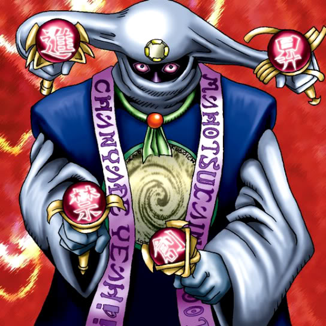

Ancient Sorcerer

STATS
ATK: 1000
DEF: 1300DECK COST
Deck Cost per Card: 23Fusion List (8 Possible Fusions)
- Ancient Sorcerer + Ancient Jar = Ushi Oni
- Ancient Sorcerer + Blast Juggler = Disk Magician
- Ancient Sorcerer + Fiend's Hand = Magical Ghost
- Ancient Sorcerer + Morphing Jar = Ushi Oni
- Ancient Sorcerer + Mystic Lamp = Lord of the Lamp
- Ancient Sorcerer + Pot the Trick = Ushi Oni
- Ancient Sorcerer + Tripwire Beast = The Immortal of Thunder
- Ancient Sorcerer + Wing Egg Elf = Dark Elf